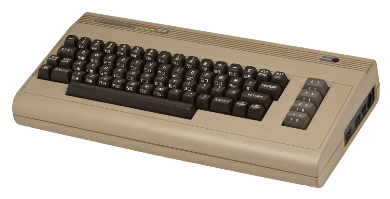
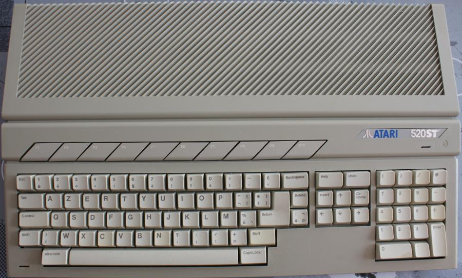
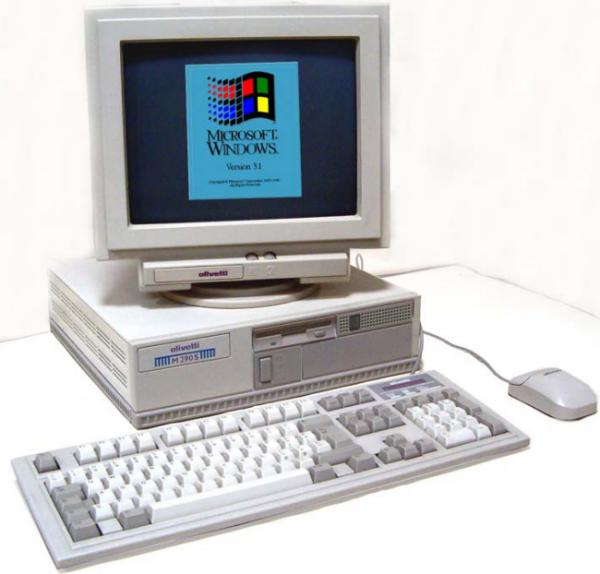
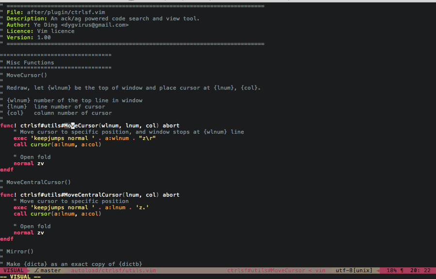
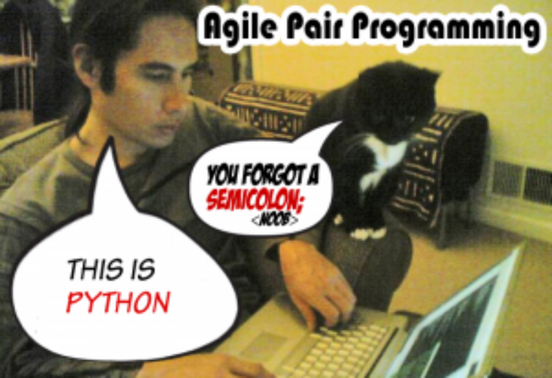

Kurze Tour durch mein Entwicklerwohnzimmer
Presenter Notes
Versuch einer Erklärung, warum ich IDEs im Allgemeinen und PyCharm im Speziellen mag.
Meine Computersozialisation ...
Presenter Notes
In vier Bildern erklärt, wo ich herkomme, weil das eventuell auch veranschaulicht, warum ich IDEs so gerne mag.
1986

Presenter Notes
Endlose listings abtippen, ohne Code Vervollständigung und Syntax Highlighting auf einer Tastatur mit superschrägem Layout und einem halben Meter Hub ... kein Spaß.
1989

Presenter Notes
Schon besser ... und mit Omikron Basic und dem mitgelieferten Editor hat programmieren langsam Spaß gemacht ...
1990er

Presenter Notes
Zig verschiedene PC Tastaturen, natürlich alle mit anderen Layouts
=>
Presenter Notes
Gaaanz viele verschiedene schreckliche Tastaturen und grauenvolle Programmierumgebungen.
=> Habe früh gelernt tippen zu hassen.
=> Ich wünsche mir eine IDE, wo ich einfach so lange auf Code vervollständigen klicke, bis das Programm fertig ist
Ich bin kein Fan von Vim

Presenter Notes
Es gibt verschiedene Typen (grob: VIM und Emacs Fraktionen)
Vim ist eher was für Sologitarristen, die gerne schnelle Licks spielen
Ich komme eher vom Klavier und spiele lieber Accorde als Licks
Symbolmanipulationen sind mir wichtiger (z.B. Name und Move Refactoring)
Eine IDE ist was anderes als ein Text Editor
Programmieren ist auch was anderes als Text editieren
Geht aber auch ... (siehe später in Plugins)
http://www.viemu.com/a-why-vi-vim.html
Darum mag ich PyCharm

Presenter Notes
Warnung
NACHTEILE VON IDES
Information Overflow Gefahr
Langsamer (Start und manchmal Bedienung)
(vielleicht) hindert am Lernen der eigentlichen Technologie
VORTTEILE
Die erzähl ich dann gleich aus meiner Sicht
Wer hat Erfahrungen mit IDEs?
Presenter Notes
Was erwartet ihr von einer IDE?
Was ich erwarte ...
Presenter Notes
Eierlegende Wollmilchsau
Muss ich während der Entwicklung selten verlassen
Kennt jemand Extreme Programming?
Presenter Notes
zwei Sachen weiß ich: Kommentare sind Bugs und Pair Programming
Pair programming ohne pair programmer
Jemand der auf alles achtet, was ich gern vergesse
... der jeden Syntaxfehler sieht
... der PEP8 Fehler sofort sieht
... der mich auf fehlende Parameter in format strings hinweist
... der alle Feinheiten der verschiedenen Python Versionen kennt
... der weiß wo alle Funktionen, Klassen und Module sind
... der mir beim Fixen der Fehler hilft
Pair Programming ohne Partner
- Inspections - statische Code Analyse (IMHO unerreicht von anderen Tools)
- Viele Quick Fixes für Konfigurationsprobleme, fehlende Pakete, Probleme im Code
- Überall kann ich einfach suchen (Projektdateinamen, Edtor, Global, Scope, ...)
- Gute Integration von allen gängigen Entwicklungsaktivitäten
- Guter Visueller Debugger / Profiler
Automatische Tests
- Schöne Darstellung der Testergebnisse mit Navigation zum betroffenen Code
- Konkrete Testfunktion, Klasse, Modul direkt vom Code aus starten
- Auto rerun von Tests
Presenter Notes
Code ausführen (Run script, Evaluate Expression)
Compare Files / read diffs
update/commit/push code from VCS (git, mercurial, svn, ...)
create/switch branches/tags
Local History / VCS history
Vor Commit: Code Analyse / Import Optimierung / Todos checken
Share project on Github
Share code / console output as gist
Kann man auch mal ausschalten

Presenter Notes
den ich aber auch ignorieren kann, wenn es nötig ist (Quick fix Warnung aus)
Und PyCharm kann das?
Presenter Notes
Ja - und darüber hinaus zeichnet es sich noch aus durch ...
Liebe zum Detail I
- Thematische Popups (z.b. 'VCS Operations')
Esc-> spring von überall zurück in den letzten aktiven EditorAlt+<--> Navigate backAlt, Alt-> Toolfensterknöpfe einblenden- Totale Navigation!
Shift, ShiftStrg+o/Strg+g/ Goto ... / Quick ... - Code Vervollständigung (zwei Stufen) / Autoimport / optimize imports
- Quick Fix!
Alt+Enter(über Fehler/Warnung/Intention)
Presenter Notes
Liebe zum Detail II
- Toolfenster Navigation ist Toggle (z.B. Terminal)
- Suchfenster / Commitffenster / Switcher auf Steroiden
- Editfenster auf Steroiden (Annotations / Code Folding / Code Lens / Changes)
- Suchen und Ersetzen Fenster auf Steroiden (mit Preview)
- Verschiedene Darstellungsmodi (Presentation, Distraction Freee)
CamelCase / slug_case sensitive Suche und Filter
Presenter Notes
Beispiel CamelCase slug_case sensitive Suche
Suche1: monty-python.jpg -> mp
Suche2: img/wollmilchsau.jpg -> i/wo
Optionen1: line numbers
Optionen2: code folding
Liebe zum Detail: Kontextabhängigket
Viele Aktionen berücksichtigen, von wo aus sie ausgeführt werden und bieten dann an den Scope der Aktion auf den aktuellen Kontext zu beschränken.
Presenter Notes
Beispiel: in Project Window einen Ordner auswählen und nur dessen Inhalte suchen, code inspizieren, Änderungen committen, tests starten
Erlernbarkeit
Help -> Find Action- Productivity Guide
- Settings gut strukturiert mit Volltextsuche
- Sehr gute Dokumentation
Presenter Notes
Unterstützt meine Frameworks und Tools
- Flask
- SQLalchemy
- Zurb Foundation
- Vagrant
- Docker
- Bequemer Datenbankzugriff auf postgres, mysql, slite, ...
- uvm.
(Teilweise nur Professional Edition)
Presenter Notes
formate, Formate, FORMATE!1!!
- Python / Ruby
- sh / Powershell
- .ignore
- HTML
- JSON / YAML
- Javascript / CoffeScript
- CSS / SCSS / LESS
- Jinja2 / Mako / Django Templates
- SQL (alle gebrächlichen Dialekte)
- Markdown (Multimarkdown) / restructuredText / AsciiDoc
Alles geht irgendwie (Plugins oder Textmate bundles)
Presenter Notes
Konfigurierbarkeit
- Layout der Toolbars (Floating, Docked, Pinned, viele Details anpassbar)
- Optionen direkt in Find Action / Search Everywhere anpassen
- Alle Farben gut anpassbar / Farbenblindenmodus / Darcula Theme!1!!
- File / Code / Live Templates
- Frei konfigurierbare Maus/Keyboard Shortcuts für wirklich alles
- Selbstkonfigurierbare Quicklists
- Externe Dokumentationsquellen konfigurierbar
- Verwendete Tools (pytest vs unittest; dok formate; requirements.txt)
Plugins!
Key Promoter | MultiMarkdown | Bash Support | .ignore | ideavim
Presenter Notes
- Projekt Interpreter
- Projektstruktur (source root, excludes, templates)
- Mehrere Repositories in einem Projekt (synchronisierbare branches)
- Zum Projekt gehörige Datenbanken im Projekt
- .idea
- Terminal in Pycharm öffnet Pojektordner (gut mit direnv)
- Strukturierungshilfen (Favoriten, Bookmarks, QuickLists)
- TODOs werden gescannt und in eigenem Toolfenster angezeigt
Presenter Notes
Projektorientiert
Meine Art zu Arbeiten ist eher Projektorientiert
Z.B. Wechsel in den Projektordner aktiviert automatisch Interpreter
In PyCharm: Terminal öffnet Projektordner und aktiviert richtigen Interpreter